本节将接受保护模式下的内存管理和处理器特权级内容。
获取物理内存容量
为了获取物理内存容量，可以使用 BIOS 提供的 0x15 号3个子功能：
- EAX=0xE820：遍历主机上全部内存
- AX=0xE801：分别检测低 15MB和 16MB~4GB的内存，最大支持 4GB
- AH=0x88：最多检测 64MB 内存
具体的读取方法只要按照相应的规则即可，这里不再赘述，其实这种死知识不用记忆，需要时查手册便可。
;主引导程序
;------------------------------------------------------------
%include "boot.inc"
SECTION MBR vstart=0x7c00
mov ax,cs
mov ds,ax
mov es,ax
mov ss,ax
mov fs,ax
mov sp,0x7c00
mov ax,0xb800
mov gs,ax
; 清屏
;利用0x06号功能，上卷全部行，则可清屏。
; -----------------------------------------------------------
;INT 0x10 功能号:0x06 功能描述:上卷窗口
;------------------------------------------------------
;输入：
;AH 功能号= 0x06
;AL = 上卷的行数(如果为0,表示全部)
;BH = 上卷行属性
;(CL,CH) = 窗口左上角的(X,Y)位置
;(DL,DH) = 窗口右下角的(X,Y)位置
;无返回值：
mov ax, 0600h
mov bx, 0700h
mov cx, 0 ; 左上角: (0, 0)
mov dx, 184fh ; 右下角: (80,25),
; 因为VGA文本模式中，一行只能容纳80个字符,共25行。
; 下标从0开始，所以0x18=24,0x4f=79
int 10h ; int 10h
; 输出字符串:MBR
mov byte [gs:0x00],'1'
mov byte [gs:0x01],0xA4
mov byte [gs:0x02],' '
mov byte [gs:0x03],0xA4
mov byte [gs:0x04],'M'
mov byte [gs:0x05],0xA4 ;A表示绿色背景闪烁，4表示前景色为红色
mov byte [gs:0x06],'B'
mov byte [gs:0x07],0xA4
mov byte [gs:0x08],'R'
mov byte [gs:0x09],0xA4
mov eax,LOADER_START_SECTOR ; 起始扇区lba地址
mov bx,LOADER_BASE_ADDR ; 写入的地址
mov cx,4 ; 待读入的扇区数
call rd_disk_m_16 ; 以下读取程序的起始部分（一个扇区）
jmp LOADER_BASE_ADDR + 0x300
;-------------------------------------------------------------------------------
;功能:读取硬盘n个扇区
rd_disk_m_16:
;-------------------------------------------------------------------------------
; eax=LBA扇区号
; ebx=将数据写入的内存地址
; ecx=读入的扇区数
mov esi,eax ;备份eax
mov di,cx ;备份cx
;读写硬盘:
;第1步：设置要读取的扇区数
mov dx,0x1f2
mov al,cl
out dx,al ;读取的扇区数
mov eax,esi ;恢复ax
;第2步：将LBA地址存入0x1f3 ~ 0x1f6
;LBA地址7~0位写入端口0x1f3
mov dx,0x1f3
out dx,al
;LBA地址15~8位写入端口0x1f4
mov cl,8
shr eax,cl
mov dx,0x1f4
out dx,al
;LBA地址23~16位写入端口0x1f5
shr eax,cl
mov dx,0x1f5
out dx,al
shr eax,cl
and al,0x0f ;lba第24~27位
or al,0xe0 ; 设置7～4位为1110,表示lba模式
mov dx,0x1f6
out dx,al
;第3步：向0x1f7端口写入读命令，0x20
mov dx,0x1f7
mov al,0x20
out dx,al
;第4步：检测硬盘状态
.not_ready:
;同一端口，写时表示写入命令字，读时表示读入硬盘状态
nop
in al,dx
and al,0x88 ;第4位为1表示硬盘控制器已准备好数据传输，第7位为1表示硬盘忙
cmp al,0x08
jnz .not_ready ;若未准备好，继续等。
;第5步：从0x1f0端口读数据
mov ax, di
mov dx, 256
mul dx
mov cx, ax ; di为要读取的扇区数，一个扇区有512字节，每次读入一个字，
; 共需di*512/2次，所以di*256
mov dx, 0x1f0
.go_on_read:
in ax,dx
mov [bx],ax
add bx,2
loop .go_on_read
ret
times 510-($-$$) db 0
db 0x55,0xaa
%include "boot.inc"
section loader vstart=LOADER_BASE_ADDR
LOADER_STACK_TOP equ LOADER_BASE_ADDR
;构建gdt及其内部的描述符
GDT_BASE: dd 0x00000000
dd 0x00000000
CODE_DESC: dd 0x0000FFFF
dd DESC_CODE_HIGH4
DATA_STACK_DESC: dd 0x0000FFFF
dd DESC_DATA_HIGH4
VIDEO_DESC: dd 0x80000007 ; limit=(0xbffff-0xb8000)/4k=0x7
dd DESC_VIDEO_HIGH4 ; 此时dpl为0
GDT_SIZE equ $ - GDT_BASE
GDT_LIMIT equ GDT_SIZE - 1
times 60 dq 0 ; 此处预留60个描述符的空位(slot)
SELECTOR_CODE equ (0x0001<<3) + TI_GDT + RPL0 ; 相当于(CODE_DESC - GDT_BASE)/8 + TI_GDT + RPL0
SELECTOR_DATA equ (0x0002<<3) + TI_GDT + RPL0 ; 同上
SELECTOR_VIDEO equ (0x0003<<3) + TI_GDT + RPL0 ; 同上
; total_mem_bytes用于保存内存容量,以字节为单位,此位置比较好记。
; 当前偏移loader.bin文件头0x200字节,loader.bin的加载地址是0x900,
; 故total_mem_bytes内存中的地址是0xb00.将来在内核中咱们会引用此地址
total_mem_bytes dd 0
;;;;;;;;;;;;;;;;;;;;;;;;;;;;;;;;;;;;;;;;;;;;;;;;;;;;
;以下是定义gdt的指针，前2字节是gdt界限，后4字节是gdt起始地址
gdt_ptr dw GDT_LIMIT
dd GDT_BASE
;人工对齐:total_mem_bytes4字节+gdt_ptr6字节+ards_buf244字节+ards_nr2,共256字节
ards_buf times 244 db 0
ards_nr dw 0 ;用于记录ards结构体数量
loader_start:
;------- int 15h eax = 0000E820h ,edx = 534D4150h ('SMAP') 获取内存布局 -------
xor ebx, ebx ;第一次调用时，ebx值要为0
mov edx, 0x534d4150 ;edx只赋值一次，循环体中不会改变
mov di, ards_buf ;ards结构缓冲区
.e820_mem_get_loop: ;循环获取每个ARDS内存范围描述结构
mov eax, 0x0000e820 ;执行int 0x15后,eax值变为0x534d4150,所以每次执行int前都要更新为子功能号。
mov ecx, 20 ;ARDS地址范围描述符结构大小是20字节
int 0x15
jc .e820_failed_so_try_e801 ;若cf位为1则有错误发生，尝试0xe801子功能
add di, cx ;使di增加20字节指向缓冲区中新的ARDS结构位置
inc word [ards_nr] ;记录ARDS数量
cmp ebx, 0 ;若ebx为0且cf不为1,这说明ards全部返回，当前已是最后一个
jnz .e820_mem_get_loop
;在所有ards结构中，找出(base_add_low + length_low)的最大值，即内存的容量。
mov cx, [ards_nr] ;遍历每一个ARDS结构体,循环次数是ARDS的数量
mov ebx, ards_buf
xor edx, edx ;edx为最大的内存容量,在此先清0
.find_max_mem_area: ;无须判断type是否为1,最大的内存块一定是可被使用
mov eax, [ebx] ;base_add_low
add eax, [ebx+8] ;length_low
add ebx, 20 ;指向缓冲区中下一个ARDS结构
cmp edx, eax ;冒泡排序，找出最大,edx寄存器始终是最大的内存容量
jge .next_ards
mov edx, eax ;edx为总内存大小
.next_ards:
loop .find_max_mem_area
jmp .mem_get_ok
;------ int 15h ax = E801h 获取内存大小,最大支持4G ------
; 返回后, ax cx 值一样,以KB为单位,bx dx值一样,以64KB为单位
; 在ax和cx寄存器中为低16M,在bx和dx寄存器中为16MB到4G。
.e820_failed_so_try_e801:
mov ax,0xe801
int 0x15
jc .e801_failed_so_try88 ;若当前e801方法失败,就尝试0x88方法
;1 先算出低15M的内存,ax和cx中是以KB为单位的内存数量,将其转换为以byte为单位
mov cx,0x400 ;cx和ax值一样,cx用做乘数
mul cx
shl edx,16
and eax,0x0000FFFF
or edx,eax
add edx, 0x100000 ;ax只是15MB,故要加1MB
mov esi,edx ;先把低15MB的内存容量存入esi寄存器备份
;2 再将16MB以上的内存转换为byte为单位,寄存器bx和dx中是以64KB为单位的内存数量
xor eax,eax
mov ax,bx
mov ecx, 0x10000 ;0x10000十进制为64KB
mul ecx ;32位乘法,默认的被乘数是eax,积为64位,高32位存入edx,低32位存入eax.
add esi,eax ;由于此方法只能测出4G以内的内存,故32位eax足够了,edx肯定为0,只加eax便可
mov edx,esi ;edx为总内存大小
jmp .mem_get_ok
;----------------- int 15h ah = 0x88 获取内存大小,只能获取64M之内 ----------
.e801_failed_so_try88:
;int 15后，ax存入的是以kb为单位的内存容量
mov ah, 0x88
int 0x15
jc .error_hlt
and eax,0x0000FFFF
;16位乘法，被乘数是ax,积为32位.积的高16位在dx中，积的低16位在ax中
mov cx, 0x400 ;0x400等于1024,将ax中的内存容量换为以byte为单位
mul cx
shl edx, 16 ;把dx移到高16位
or edx, eax ;把积的低16位组合到edx,为32位的积
add edx,0x100000 ;0x88子功能只会返回1MB以上的内存,故实际内存大小要加上1MB
.mem_get_ok:
mov [total_mem_bytes], edx ;将内存换为byte单位后存入total_mem_bytes处。
;----------------- 准备进入保护模式 -------------------
;1 打开A20
;2 加载gdt
;3 将cr0的pe位置1
;----------------- 打开A20 ----------------
in al,0x92
or al,0000_0010B
out 0x92,al
;----------------- 加载GDT ----------------
lgdt [gdt_ptr]
;----------------- cr0第0位置1 ----------------
mov eax, cr0
or eax, 0x00000001
mov cr0, eax
jmp dword SELECTOR_CODE:p_mode_start ; 刷新流水线，避免分支预测的影响,这种cpu优化策略，最怕jmp跳转，
; 这将导致之前做的预测失效，从而起到了刷新的作用。
.error_hlt: ;出错则挂起
hlt
[bits 32]
p_mode_start:
mov ax, SELECTOR_DATA
mov ds, ax
mov es, ax
mov ss, ax
mov esp,LOADER_STACK_TOP
mov ax, SELECTOR_VIDEO
mov gs, ax
mov byte [gs:160], 'P'
jmp $
编译并加载 mbr 和 loader：
nasm -I include/ -o mbr.bin mbr.S
sudo dd if=mbr.bin of=/usr/local/bin/hd60M.img bs=512 count=1 conv=notrunc
nasm -I include/ -o loader.bin loader.S
sudo dd if=loader.bin of=/usr/local/bin/hd60M.img bs=512 count=4 seek=2 conv=notrunc查看 0xb00 处内存为：
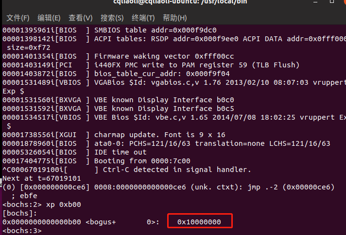
启用内存分页
内存为什么要分页
现假设有如下进程使用情况，当进程 D 需要运行时，虽然总内存足够，但是并不连续：
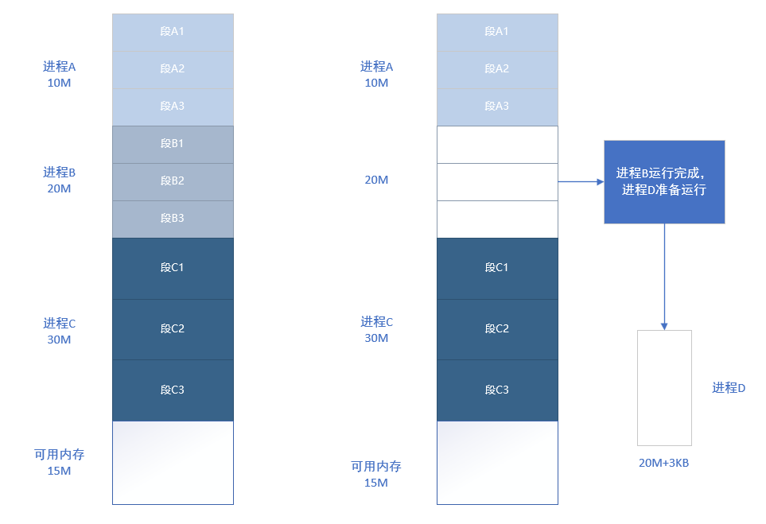
容易想到两种简单的办法，一是等待 C 进程执行完，不过明明有足够内存，却不能执行进程，显然此办法不够好，另一种是将进程 C 换出，写入磁盘，不过换出过程十分消耗 CPU ，效率太低。
其实上述问题的根本是进程的地址是连续的，而多次运行后，剩余的内存并不连续，所以解决办法是将内存划分成更小的部分，同时增加中间层，让程序的地址不再直接映射为物理地址，从而提高灵活性。
上面我们再次体会到了增加中间层的威力。
计算机科学领域的任何问题都可以通过增加一个间接的中间层来解决
Any problem in computer science can be solved by anther layer of indirection.
一级页表
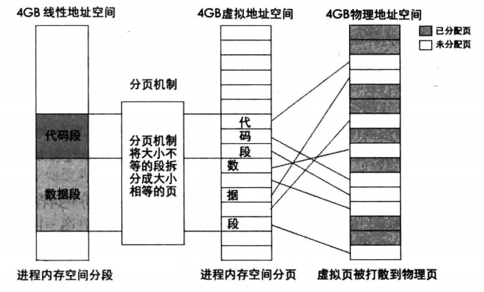
分页后有以下两个作用：
- 线性地址转换成物理地址
- 用大小相等的页代替大小不等的段
那我们该怎么讲虚拟地址和物理地址映射呢？最简单的方式是一一映射，不过光存映射项就要大量的内存，此方案肯定行不通；32 位地址可以将其拆分成高地址和低地址，高地址代表内存块数量，低地址代表每个内存块大小，为了寻找合适的映射尺寸，就是将下图所示的游标左右滑动到合适的位置：
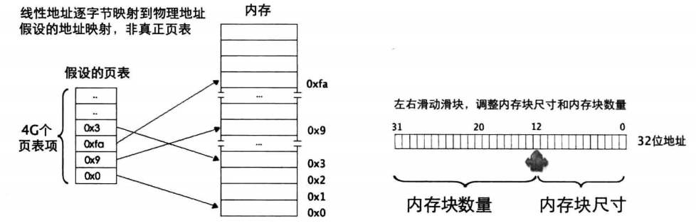
二级页表
一级页表中页表的大小为 1MB，但是每个进程都有自己的页表，如果有大量进程，势必会耗费大量内存，所以再加一层中间层，即二级页表便可解决内存消耗问题。不过合适的尺寸是多少呢？其实就是将高 20 位地址再次拆分，尝试后发现对半分比较好，因为 1K 个项乘以 4字节刚好是一个页表的大小，所以页目录和页表都刚好可以放在一个页表中，太棒了。
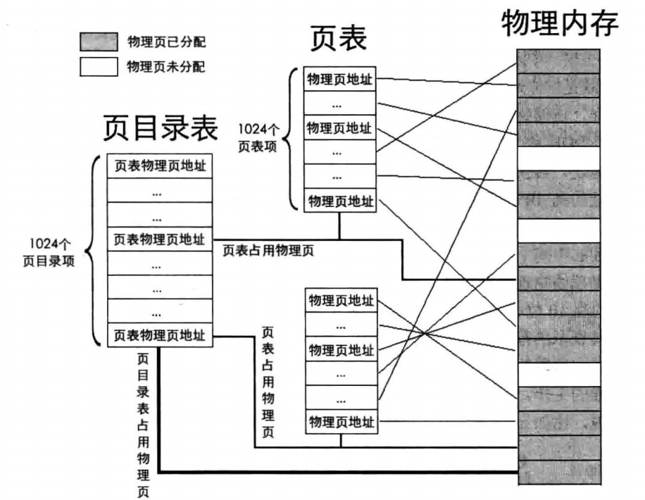
当然层级越多，转换过程越复杂，不过只要一层层的翻译还是很容易的，比如 mov ax,[0x1234567] ：
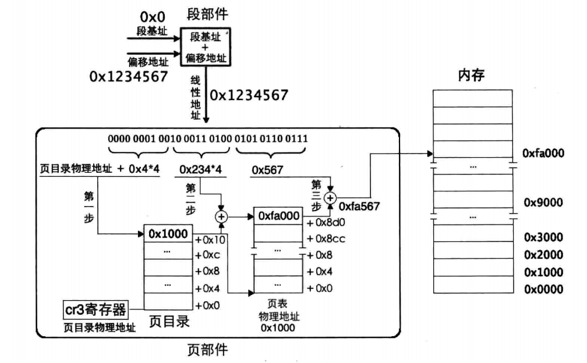
由于页目录项和页表项低 12位并没有用，因为页表以 4K为单位，所以其低 12位可以存其他的控制信息：
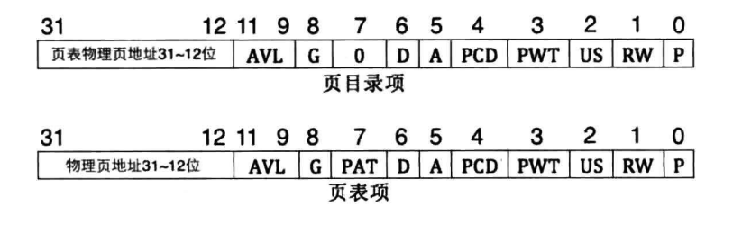
启用分页的步骤：
- 准备好页目录和页表
- 将页表地址写入控制寄存器 cr3
- 寄存器 cr0 的PG位置 1
分页后页目录表和页表的关系：
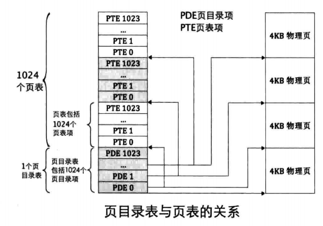
以下为我们设计的内存布局图：
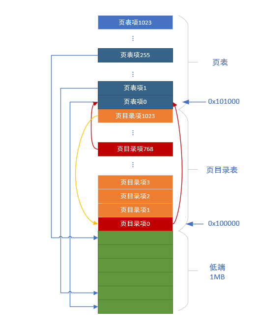
代码如下：
%include "boot.inc"
section loader vstart=LOADER_BASE_ADDR
LOADER_STACK_TOP equ LOADER_BASE_ADDR
;构建gdt及其内部的描述符
GDT_BASE: dd 0x00000000
dd 0x00000000
CODE_DESC: dd 0x0000FFFF
dd DESC_CODE_HIGH4
DATA_STACK_DESC: dd 0x0000FFFF
dd DESC_DATA_HIGH4
VIDEO_DESC: dd 0x80000007 ; limit=(0xbffff-0xb8000)/4k=0x7
dd DESC_VIDEO_HIGH4 ; 此时dpl为0
GDT_SIZE equ $ - GDT_BASE
GDT_LIMIT equ GDT_SIZE - 1
times 60 dq 0 ; 此处预留60个描述符的空位(slot)
SELECTOR_CODE equ (0x0001<<3) + TI_GDT + RPL0 ; 相当于(CODE_DESC - GDT_BASE)/8 + TI_GDT + RPL0
SELECTOR_DATA equ (0x0002<<3) + TI_GDT + RPL0 ; 同上
SELECTOR_VIDEO equ (0x0003<<3) + TI_GDT + RPL0 ; 同上
; total_mem_bytes用于保存内存容量,以字节为单位,此位置比较好记。
; 当前偏移loader.bin文件头0x200字节,loader.bin的加载地址是0x900,
; 故total_mem_bytes内存中的地址是0xb00.将来在内核中咱们会引用此地址
total_mem_bytes dd 0
;;;;;;;;;;;;;;;;;;;;;;;;;;;;;;;;;;;;;;;;;;;;;;;;;;;;
;以下是定义gdt的指针，前2字节是gdt界限，后4字节是gdt起始地址
gdt_ptr dw GDT_LIMIT
dd GDT_BASE
;人工对齐:total_mem_bytes4字节+gdt_ptr6字节+ards_buf244字节+ards_nr2,共256字节
ards_buf times 244 db 0
ards_nr dw 0 ;用于记录ards结构体数量
loader_start:
;------- int 15h eax = 0000E820h ,edx = 534D4150h ('SMAP') 获取内存布局 -------
xor ebx, ebx ;第一次调用时，ebx值要为0
mov edx, 0x534d4150 ;edx只赋值一次，循环体中不会改变
mov di, ards_buf ;ards结构缓冲区
.e820_mem_get_loop: ;循环获取每个ARDS内存范围描述结构
mov eax, 0x0000e820 ;执行int 0x15后,eax值变为0x534d4150,所以每次执行int前都要更新为子功能号。
mov ecx, 20 ;ARDS地址范围描述符结构大小是20字节
int 0x15
jc .e820_failed_so_try_e801 ;若cf位为1则有错误发生，尝试0xe801子功能
add di, cx ;使di增加20字节指向缓冲区中新的ARDS结构位置
inc word [ards_nr] ;记录ARDS数量
cmp ebx, 0 ;若ebx为0且cf不为1,这说明ards全部返回，当前已是最后一个
jnz .e820_mem_get_loop
;在所有ards结构中，找出(base_add_low + length_low)的最大值，即内存的容量。
mov cx, [ards_nr] ;遍历每一个ARDS结构体,循环次数是ARDS的数量
mov ebx, ards_buf
xor edx, edx ;edx为最大的内存容量,在此先清0
.find_max_mem_area: ;无须判断type是否为1,最大的内存块一定是可被使用
mov eax, [ebx] ;base_add_low
add eax, [ebx+8] ;length_low
add ebx, 20 ;指向缓冲区中下一个ARDS结构
cmp edx, eax ;冒泡排序，找出最大,edx寄存器始终是最大的内存容量
jge .next_ards
mov edx, eax ;edx为总内存大小
.next_ards:
loop .find_max_mem_area
jmp .mem_get_ok
;------ int 15h ax = E801h 获取内存大小,最大支持4G ------
; 返回后, ax cx 值一样,以KB为单位,bx dx值一样,以64KB为单位
; 在ax和cx寄存器中为低16M,在bx和dx寄存器中为16MB到4G。
.e820_failed_so_try_e801:
mov ax,0xe801
int 0x15
jc .e801_failed_so_try88 ;若当前e801方法失败,就尝试0x88方法
;1 先算出低15M的内存,ax和cx中是以KB为单位的内存数量,将其转换为以byte为单位
mov cx,0x400 ;cx和ax值一样,cx用做乘数
mul cx
shl edx,16
and eax,0x0000FFFF
or edx,eax
add edx, 0x100000 ;ax只是15MB,故要加1MB
mov esi,edx ;先把低15MB的内存容量存入esi寄存器备份
;2 再将16MB以上的内存转换为byte为单位,寄存器bx和dx中是以64KB为单位的内存数量
xor eax,eax
mov ax,bx
mov ecx, 0x10000 ;0x10000十进制为64KB
mul ecx ;32位乘法,默认的被乘数是eax,积为64位,高32位存入edx,低32位存入eax.
add esi,eax ;由于此方法只能测出4G以内的内存,故32位eax足够了,edx肯定为0,只加eax便可
mov edx,esi ;edx为总内存大小
jmp .mem_get_ok
;----------------- int 15h ah = 0x88 获取内存大小,只能获取64M之内 ----------
.e801_failed_so_try88:
;int 15后，ax存入的是以kb为单位的内存容量
mov ah, 0x88
int 0x15
jc .error_hlt
and eax,0x0000FFFF
;16位乘法，被乘数是ax,积为32位.积的高16位在dx中，积的低16位在ax中
mov cx, 0x400 ;0x400等于1024,将ax中的内存容量换为以byte为单位
mul cx
shl edx, 16 ;把dx移到高16位
or edx, eax ;把积的低16位组合到edx,为32位的积
add edx,0x100000 ;0x88子功能只会返回1MB以上的内存,故实际内存大小要加上1MB
.mem_get_ok:
mov [total_mem_bytes], edx ;将内存换为byte单位后存入total_mem_bytes处。
;----------------- 准备进入保护模式 -------------------
;1 打开A20
;2 加载gdt
;3 将cr0的pe位置1
;----------------- 打开A20 ----------------
in al,0x92
or al,0000_0010B
out 0x92,al
;----------------- 加载GDT ----------------
lgdt [gdt_ptr]
;----------------- cr0第0位置1 ----------------
mov eax, cr0
or eax, 0x00000001
mov cr0, eax
jmp dword SELECTOR_CODE:p_mode_start ; 刷新流水线，避免分支预测的影响,这种cpu优化策略，最怕jmp跳转，
; 这将导致之前做的预测失效，从而起到了刷新的作用。
.error_hlt: ;出错则挂起
hlt
[bits 32]
p_mode_start:
mov ax, SELECTOR_DATA
mov ds, ax
mov es, ax
mov ss, ax
mov esp,LOADER_STACK_TOP
mov ax, SELECTOR_VIDEO
mov gs, ax
; 创建页目录及页表并初始化页内存位图
call setup_page
;要将描述符表地址及偏移量写入内存gdt_ptr,一会用新地址重新加载
sgdt [gdt_ptr] ; 存储到原来gdt所有的位置
;将gdt描述符中视频段描述符中的段基址+0xc0000000
mov ebx, [gdt_ptr + 2]
or dword [ebx + 0x18 + 4], 0xc0000000 ;视频段是第3个段描述符,每个描述符是8字节,故0x18。
;段描述符的高4字节的最高位是段基址的31~24位
;将gdt的基址加上0xc0000000使其成为内核所在的高地址
add dword [gdt_ptr + 2], 0xc0000000
add esp, 0xc0000000 ; 将栈指针同样映射到内核地址
; 把页目录地址赋给cr3
mov eax, PAGE_DIR_TABLE_POS
mov cr3, eax
; 打开cr0的pg位(第31位)
mov eax, cr0
or eax, 0x80000000
mov cr0, eax
;在开启分页后,用gdt新的地址重新加载
lgdt [gdt_ptr] ; 重新加载
mov byte [gs:160], 'V' ;视频段段基址已经被更新,用字符v表示virtual addr
jmp $
;------------- 创建页目录及页表 ---------------
setup_page:
;先把页目录占用的空间逐字节清0
mov ecx, 4096
mov esi, 0
.clear_page_dir:
mov byte [PAGE_DIR_TABLE_POS + esi], 0
inc esi
loop .clear_page_dir
;开始创建页目录项(PDE)
.create_pde: ; 创建Page Directory Entry
mov eax, PAGE_DIR_TABLE_POS
add eax, 0x1000 ; 此时eax为第一个页表的位置及属性
mov ebx, eax ; 此处为ebx赋值，是为.create_pte做准备，ebx为基址。
; 下面将页目录项0和0xc00都存为第一个页表的地址，
; 一个页表可表示4MB内存,这样0xc03fffff以下的地址和0x003fffff以下的地址都指向相同的页表，
; 这是为将地址映射为内核地址做准备
or eax, PG_US_U | PG_RW_W | PG_P ; 页目录项的属性RW和P位为1,US为1,表示用户属性,所有特权级别都可以访问.
mov [PAGE_DIR_TABLE_POS + 0x0], eax ; 第1个目录项,在页目录表中的第1个目录项写入第一个页表的位置(0x101000)及属性(7)
mov [PAGE_DIR_TABLE_POS + 0xc00], eax ; 一个页表项占用4字节,0xc00表示第768个页表占用的目录项,0xc00以上的目录项用于内核空间,
; 也就是页表的0xc0000000~0xffffffff共计1G属于内核,0x0~0xbfffffff共计3G属于用户进程.
sub eax, 0x1000
mov [PAGE_DIR_TABLE_POS + 4092], eax ; 使最后一个目录项指向页目录表自己的地址
;下面创建页表项(PTE)
mov ecx, 256 ; 1M低端内存 / 每页大小4k = 256
mov esi, 0
mov edx, PG_US_U | PG_RW_W | PG_P ; 属性为7,US=1,RW=1,P=1
.create_pte: ; 创建Page Table Entry
mov [ebx+esi*4],edx ; 此时的ebx已经在上面通过eax赋值为0x101000,也就是第一个页表的地址
add edx,4096
inc esi
loop .create_pte
;创建内核其它页表的PDE
mov eax, PAGE_DIR_TABLE_POS
add eax, 0x2000 ; 此时eax为第二个页表的位置
or eax, PG_US_U | PG_RW_W | PG_P ; 页目录项的属性US,RW和P位都为1
mov ebx, PAGE_DIR_TABLE_POS
mov ecx, 254 ; 范围为第769~1022的所有目录项数量
mov esi, 769
.create_kernel_pde:
mov [ebx+esi*4], eax
inc esi
add eax, 0x1000
loop .create_kernel_pde
ret
编译运行后查看虚拟地址映射情况：
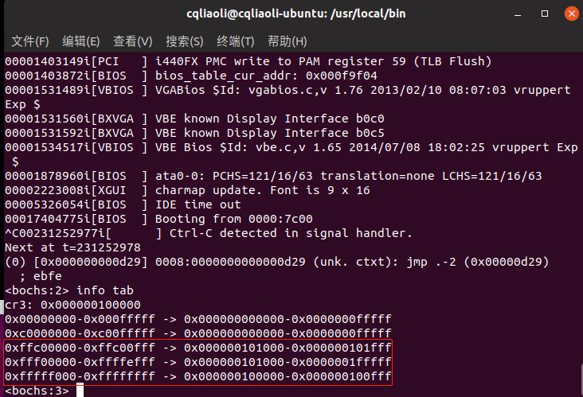
注意最后三个映射，由于第 1023 个页目录项地址为 0x100000 即第一个页目录项，所以页目录会被当成页表访问，如下图所示：
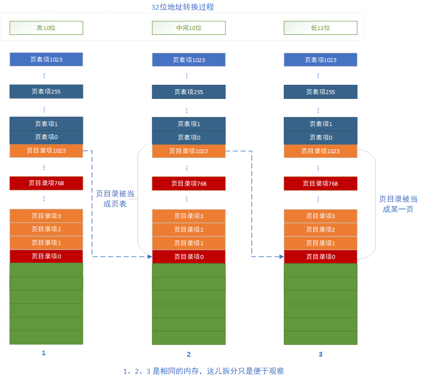